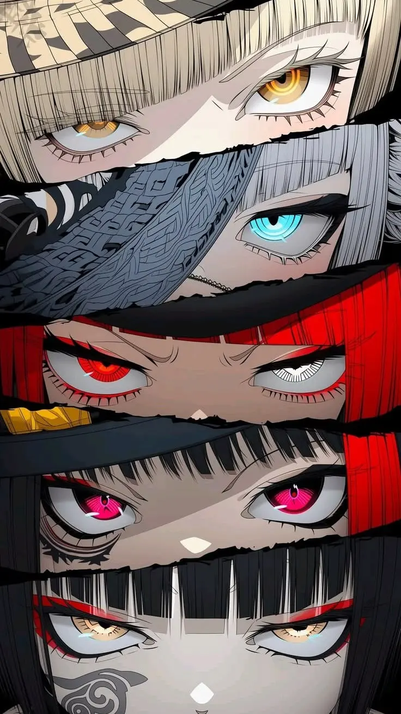

ESPÉCIE: Os Anêmicos
ID: Homo Sapiens V-Gen
Status: Ameaça Ativa
O Paradoxo de Morozov
Diferente dos mutantes da Zona Cinza, os Anêmicos são "vampiros de proveta". Criados pela
Morozov-Biotech, sofreram falha genética catastrófica.
Dependem de plasma sintético ou do roubo de sangue biológico através de Sifões de
Pulso.
Fisiologia e Combate
- Dependência: Sem sangue, órgãos entram em colapso.
- UV-Sensível: Luz solar causa queimaduras químicas.
- Blood Rage: Perdem a razão em troca de velocidade extrema.
"O sangue é apenas o combustível. O que nos move é o medo de desligar." — Boris, Desertor.
Pág. 01

SHINOBI: O Bandoleiro (死)
ID: Desconhecido / "O Quarto Poder"
Status: DESCONHECIDO
O Mito do Quarto Kanji
Relatos de batedores descrevem uma figura que transita entre as sombras de Neo-Tokyo como um
fantasma metódico. Onde passa, o número 4 (死 - Shi) é deixado como uma
assinatura. Ele não caça por fome ou créditos; ele executa por uma estética de "justiça" que
beira o ritualístico.
Dizem que sua voz é calma como a de um analista forense, mesmo enquanto empunha o terror.
O Código do Carniceiro
- A Divina Pureza: O Bandoleiro possui um limite absoluto: crianças. Para
ele, elas são a única parte não corrompida do mundo de 2326. Ele jamais as ataca e, em
vários logs, foi visto agindo como um protetor violento contra quem as ameaça.
- Execução Cirúrgica: Seus alvos costumam ser figuras de poder hipócritas.
Ele
não mata, ele "apresenta um terror psicológico a vitima sempre a forçando a tomar decisões
contra sua moralidade deturpada".
- Natureza Híbrida: Mistura a paciência de um predador silencioso com a
curiosidade intelectual de um cirurgião.
"A tragédia exige ritmo. O mundo é um palco sujo, e eu sou o único que ainda se importa com o
final." — Transmissão interceptada.
Pág. 02
[DADOS CRIPTOGRAFADOS]
Sinal de rádio interceptado na Zona Cinza...
Aguardando batedores para completar o
log biológico.
Pág. 03